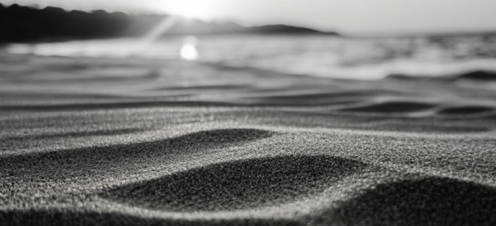

Origin Story
Where Sand is Forged.
I spent countless hours learning CAD and 3D design, but I didn't have a real application for it. The turning point came on a trip to the beach. Laying there, feeling the sand slip through my fingers, I realized something: an individual grain is useless by itself. But when you gather multiple, you sink into them.
That sand represents the obstacles of our everyday lives. For overworked doctors fighting against frustrating, poorly made tools, their daily gear just pulls them down. My goal is to take that raw, heavy sand and forge it under pressure into clear, functional glass. Hence. Phase Glass.
2.4k+
CAD Hours
01
Upcoming Launch